European Youth Event · European Parliament
EYE 2025: Democracy Under Digital Siege
Two workshops we organised at the European Youth Event in the European Parliament, Strasbourg.
- When
- 13–14 June 2025
- Where
- European Parliament, Strasbourg, France
- With
- Digital Dreamers Luxembourg, Waves of Change Cyprus, Colțul Tinerilor din Vest Romania
- Subjects
- Deepfakes, AI, democracy
01
We didn’t just participate. We led.
In June 2025, our organisation had the incredible opportunity to take part in, and organise two workshops at, the European Youth Event (EYE) 2025 in Strasbourg: one of the most dynamic gatherings of young people and changemakers from across Europe.
Alongside youth leaders from our partner organisations Digital Dreamers Luxembourg, Waves of Change Cyprus and Colțul Tinerilor din Vest Romania, we brought energy, innovation and pressing questions to the heart of the European Parliament. Our delegation included young people actively involved in our Erasmus+ projects: passionate, curious, and ready to shape Europe’s future.
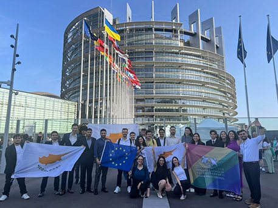
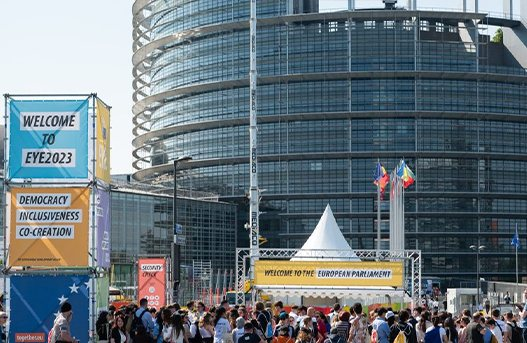
02
Meet John Doe
In a packed room full of diverse voices, we introduced participants to John Doe, a deepfake persona generated with AI tools. The line between fiction and reality blurred as attendees watched the creation unfold, triggering a much-needed conversation: what is real, and how can we know for sure?
Throughout the session we explored important questions. How can we tell human and machine-generated content apart? How long until AI affects democracy and elections? What ethical standards should guide the use of AI in public life? And perhaps most importantly: what can we, as young people, do to educate ourselves and others?
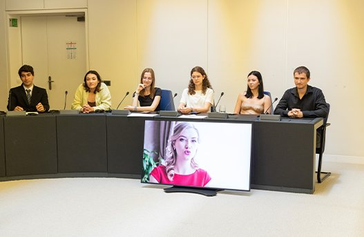
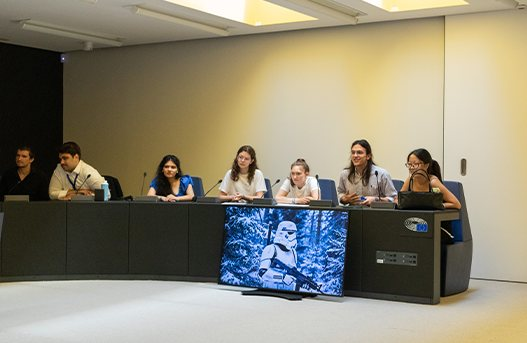
03
Spotting the fakes
The workshops also included practical activities on recognising fake news and understanding the consequences of spreading misinformation. Participants shared personal experiences, questioned their assumptions, and brainstormed collective solutions for a safer digital environment.
We looked not only at the risks but also at the possibilities: how to use AI responsibly, how to advocate for strong regulation, and how to keep human values at the centre of innovation.
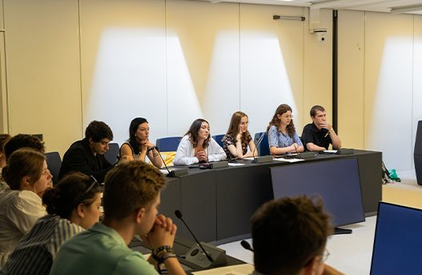
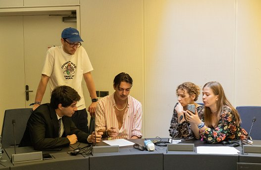
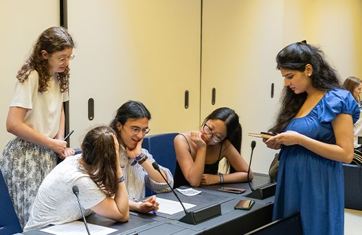
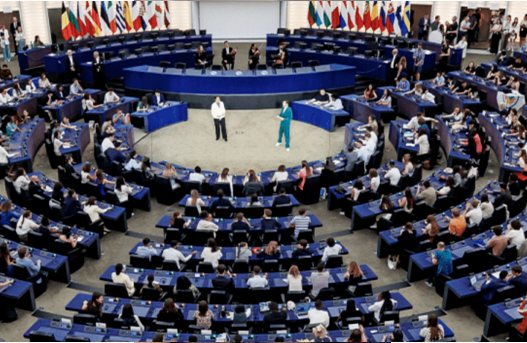
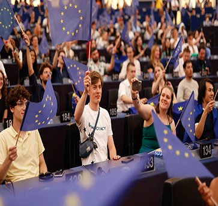
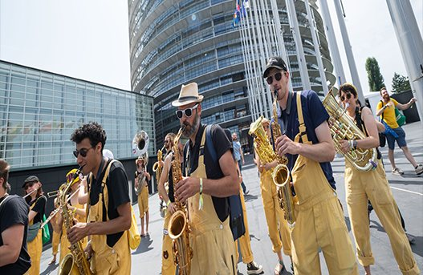
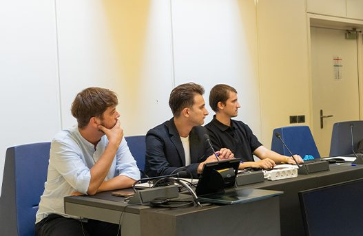
EYE 2025 in Strasbourg · scroll sideways for more →
Videos come from YouTube (Google) and load only when you press play. How we handle this
What is real, and how can we know for sure?